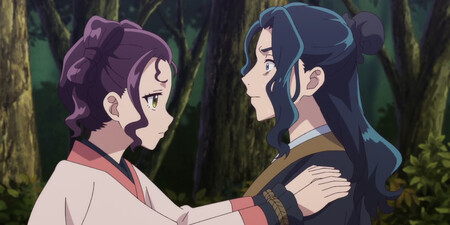

Jornal focado basicamente na vida de um império, mais especificamente dentro de um lugar das concubinas, empregadas, damas de honra e todas as mulheres.
A concubina do clã Shi, a Lady Shisui é descoberta tendo uma outra identidade como uma mera empregada chamada "Loulan". Com essa identidade falsa ela estudava todo o mapa do palácio interno para traçar um plano de fuga e sequestro de uma apotecária chamada "MaoMao", que aparentemente era importante para o plano de Shishiu e sua meia-irmã Suirei.
Fontes confiáveis dizem que o Kan Lakan, pai biológico da apotecária, teria feito um maior escândalo e foi cobrar ajuda ao Eunuco Jinshi e o imperador para salvar a filha e proteger o império. Mas que foi impedido de ir à luta por dor de barriga, acredita? 😯 🤣

Postado por Amanda Brito - © 2025